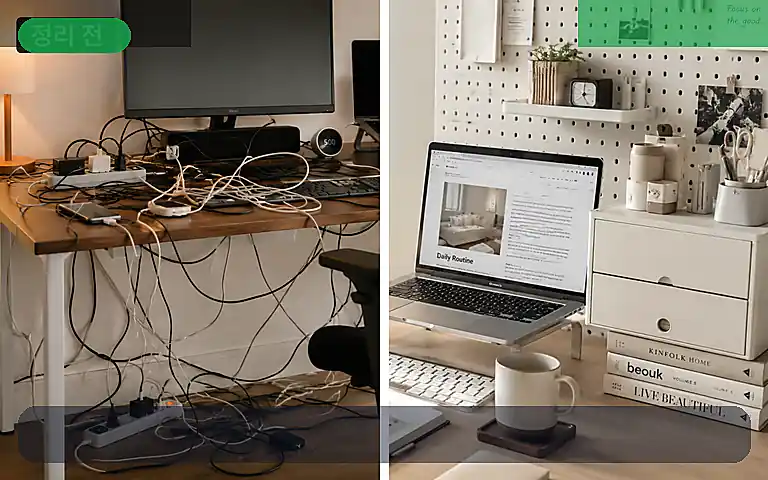
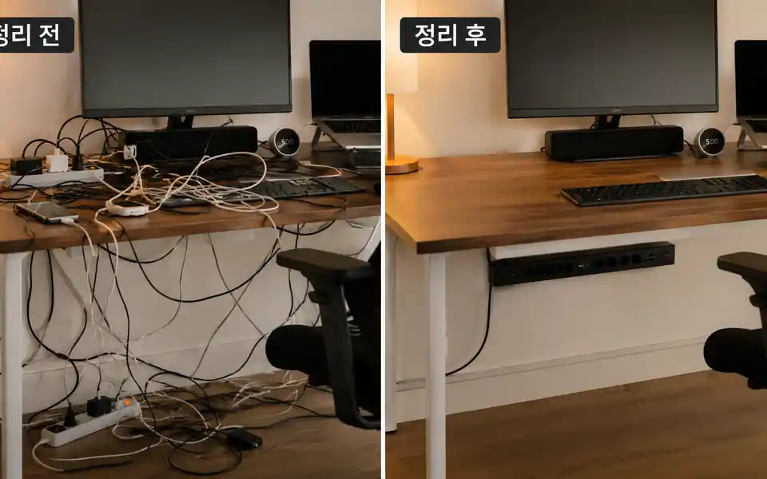

케이블 정리 전후 체감 차이 리뷰

TrendFlow Guide전선과 멀티탭 노출을 줄였을 때 작업 공간이 얼마나 달라지는지 정리합니다.
핵심 요약
책상 위 전선 때문에 공간이 지저분하고 산만해 보이는 상황이라면, 먼저 멀티탭 위치를 숨기고 필수 충전선만 노출한다는 방식으로 접근하는 것이 좋습니다.
이런 상황이라면 이렇게 시작하세요
공간이 복잡해서 시작이 어렵다면
책상과 방이 좁은 것보다 눈에 들어오는 물건과 케이블이 많아서 더 답답하게 느껴질 수 있어요.
처음부터 인테리어를 바꾸지 마세요
큰 가구를 바꾸기보다 책상 위에 항상 올라와 있는 물건부터 줄이는 편이 체감이 빠릅니다.
보이는 자극부터 줄이세요
케이블, 종이류, 자주 쓰지 않는 물건을 먼저 치우고 물건의 고정 위치를 정하세요.
지금 해볼 것
지금 책상 위에서 오늘 쓰지 않을 물건 3개만 먼저 빼보세요.
왜 지금 이 주제가 필요한가
- 정보와 선택지가 많아질수록, 사용자는 단순 추천보다 먼저 판단 기준을 원합니다.
- 공간 & 미니멀 카테고리에서는 실제 생활 문제를 먼저 정리하고, 필요한 경우에만 아이템을 연결합니다.
- 쇼츠나 블로그로 확장할 때도 Before / After, 비교표, 체크리스트형 구성이 반응을 만들기 쉽습니다.
실사용 관점 리뷰
이 주제에서 가장 중요한 것은 처음부터 완벽한 장비나 루틴을 갖추는 것이 아닙니다. 현재 반복되는 불편함을 하나만 고르고, 그 문제를 줄이는 최소 행동을 먼저 만드는 것입니다.
아이템이 필요한 경우에도 케이블 정리함, 멀티탭 거치대, 벨크로 타이처럼 문제와 직접 연결되는 것부터 비교하는 편이 좋습니다. 목적 없이 여러 상품을 한 번에 보면 광고처럼 느껴지고 실제 실행도 늦어질 수 있습니다.
비교 분석
| 구분 | 확인할 것 | 추천 방향 |
|---|---|---|
| 문제 | 책상 위 전선 때문에 공간이 지저분하고 산만해 보이는 상황 | 가장 먼저 해결할 불편함을 하나만 고릅니다. |
| 아이템 | 케이블 정리함, 멀티탭 거치대, 벨크로 타이 | 여러 개를 한 번에 사기보다 1순위만 비교합니다. |
| 해결 | 멀티탭 위치를 숨기고 필수 충전선만 노출한다 | 실행이 쉬운 방식부터 적용합니다. |
추천 우선순위
- 현재 가장 불편한 문제와 직접 연결되는지 확인합니다.
- 매일 또는 매주 반복해서 사용할 가능성이 높은지 봅니다.
- 이미 가진 물건이나 루틴으로 먼저 해결 가능한지 확인합니다.
사지 않아도 되는 경우
충전 기기가 적고 이미 깔끔하다면 정리함 없이 벨크로 타이만으로도 충분합니다.
쇼츠 연결 아이디어
- 문제 상황을 3초 안에 보여주는 Before 장면을 만듭니다.
- 해결 후 달라진 책상, 화면, 루틴, 아이템 조합을 After 장면으로 보여줍니다.
- 자세한 비교표와 체크리스트는 사이트 글로 연결합니다.
한눈에 비교해보세요

전선을 완전히 없애는 것보다, 눈에 자주 보이는 선부터 숨기면 체감이 빠릅니다.
바로 사기 전에 이 기준부터 확인하세요
추천 대상
책상 위 물건과 전선 때문에 공간이 계속 복잡해 보이는 사람
먼저 볼 항목
케이블 정리함, 수납박스, 책상선반
사지 않아도 되는 경우
버릴 물건을 정하지 않았다면 수납함부터 사지 마세요.
먼저 해볼 것
책상 위에 오늘 쓰지 않는 물건 3개부터 빼보세요.